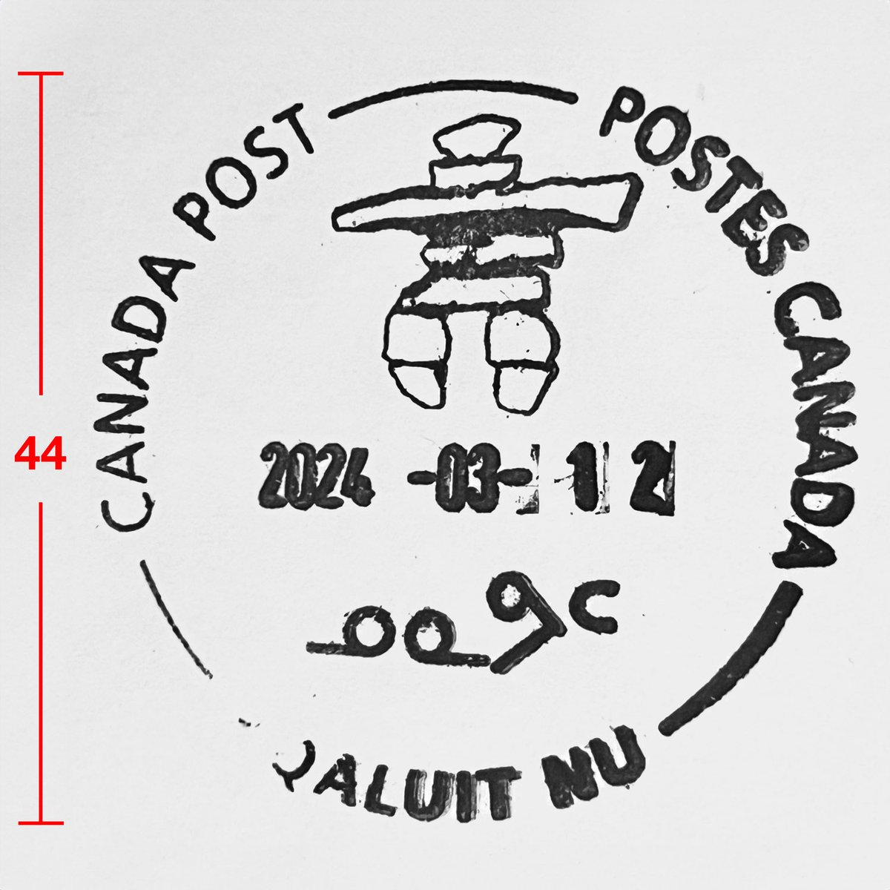

Iqaluit PO pictorial cancel
Inukshuk
- Status
- Active
- Run dates
- ? to present
- Design
- inukshuk
- Ink colour
- Black
- Designer
- Unknown
- Post office
- Iqaluit PO
615 Queen Elizabeth II Way
Iqaluit, NU
X0A 3H0 - Subjects
- first nation, symbol, inukshuk
Collect it by mail. Send your stamped covers, with a stamped return envelope, to the post office address above. How to collect pictorial cancels by mail · en français
 Cambridge Bay POMAUD
Cambridge Bay POMAUD Eureka Station FundEUREKA WEATHER STATION / Canada's Most Northern Post Office
Eureka Station FundEUREKA WEATHER STATION / Canada's Most Northern Post Office